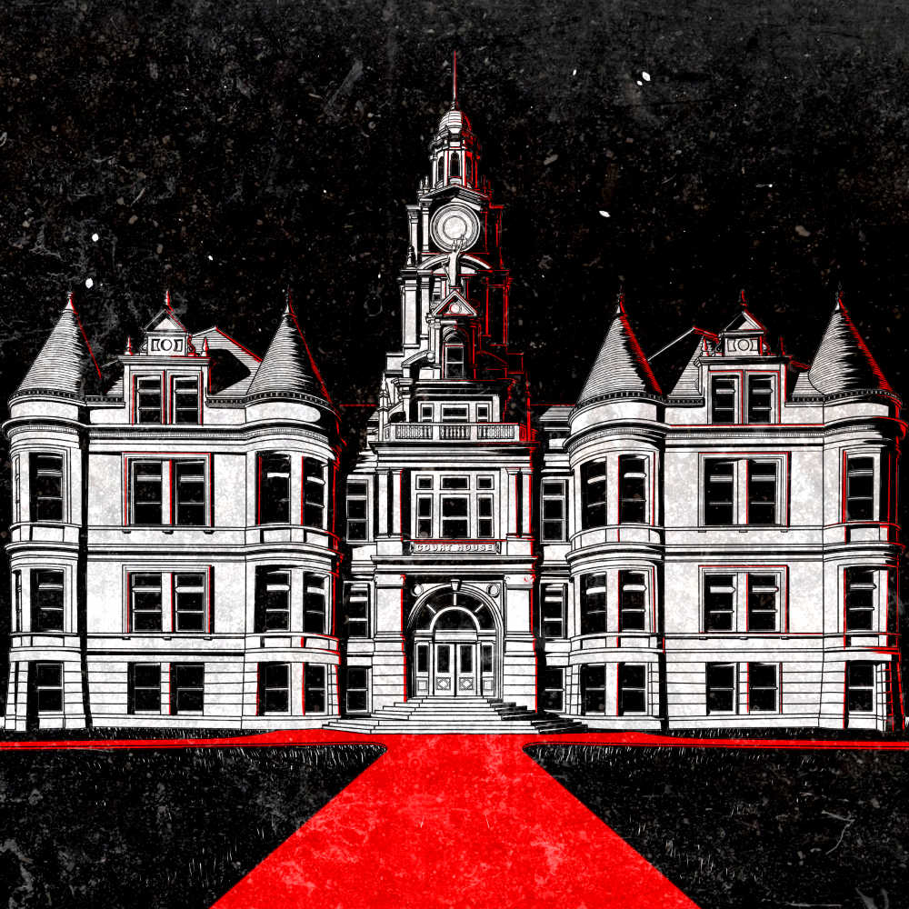

Investing in the stock market can be very profitable. Especially if you can see into the future. This is a story of how a group of traders and hackers got together to figure out a way to see into the future and make a lot of money from that.
EP 59
The Courthouse
18 February 2020
https://dcs.megaphone.fm/ADV2874730743.mp3?key=9f2a062e961c5153273f75a4ca65d1c9&request_event_id=0da231d9-d3e8-497c-a9dc-a6bcf3d0c29d
85:51
In this episode we hear from Gary and Justin. Two seasoned
penetration testers who tell us a story about the time when they
tried to break into a courthouse but it went all wrong.
